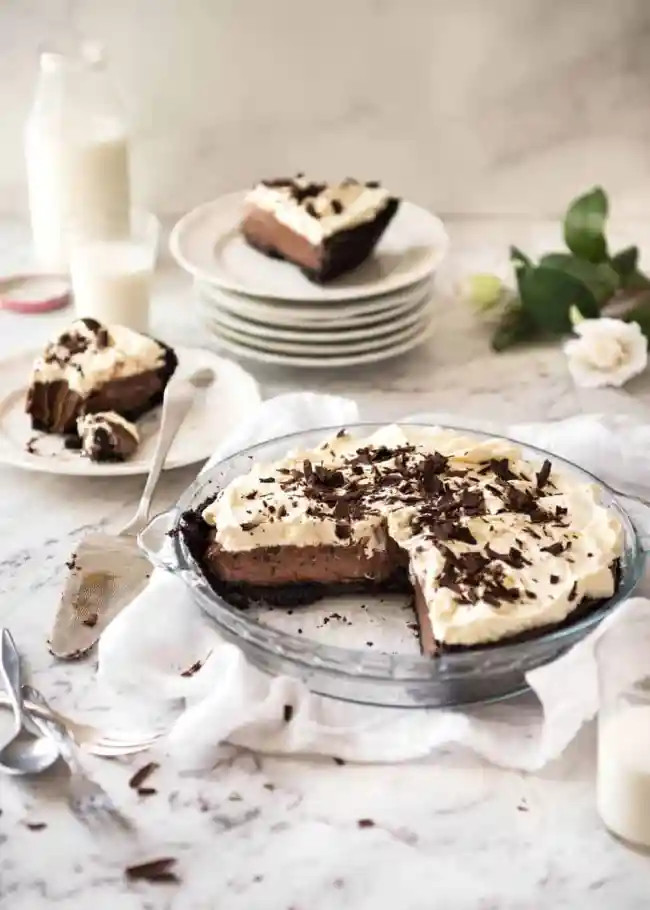

Chocolate Cream Pie

If chocolate mousse and chocolate Bavarian Pie had a child!
A magnificent Chocolate Cream Pie with a classic Oreo cookie base, a soft and creamy custard-like filling and topped with clouds of cream.
When you see how easy this is to make, you won't ever be tempted to use a shortcut version again. After all, if we're going to make a chocolate pie, let's do it right!
Ingredients
Crust:
- 25 Oreo biscuits, whole with filling in tact
- 5 tbsp//60g bitter, melted
Filling:
- 1/4 cup / 40g cornflour / cornstarch
- 2/3 cup / 145g white sugar
- Pinch of salt
- 2 cups / 500 ml milk ( whole or reduced fat, not zero fat)
- 1 cup / 250 ml cream (pouring or thickened/heavy) or sub with milk
- 4 egg yolks
- 2 tbsp / 30g unsalted butter, melted
- 1 tsp vanilla extract
- 150g / 5 oz dark 70% cocoa or bittersweet chocolate, broken into pieces or chopped
- t5g / 3oz milk chocolate (if not buttons, break into pieces)
Topping:
- 1 1/2 cups / 375ml thickened / heavy cream
- 2 tbsp sugar
- 1/2 tsp vanilla extract
- Chocolate
Instructions
- Preheat oven to 180c/350F.
- Cut a round piece of banking / parchment paper, the size of the pie dish (to cover filling)
Pie Crust
- Place biscuits in a food processor and whizz into crumbs. Or place in ziplock bag and bash with rolling pin or heavy cans. Pour into bowl, add butter and mix.
- Pour into a 23cm / 9" pie dish, spread crumbs out across base. Use wooden spoon to press into sides (see video) and something flat to press into base.
- Bake for 10 minutes, then allow to cool.
Filling
- Place cornflour, sugar and salt in a medium saucepan. Whisk to combine.
- Add milk, cream and yolks. Whisk to combine.
- Turn heat onto medium low (or low for strong gas stoves). As the mixture warms up, whisk regularly, but not constantly.
- After around 3 minutes, you'll feel the mixture thicken. Start to whisk constantly.
- When the mixture starts bubbling (around 4 min), whisk constantly for 45 seconds then take it off the stove.
- Whisk for a further 1 minute. Add butter, chocolate and vanilla. Whisk until chocolate melts and filling is smooth.
Assembling
- Pour filling into pie shell, smooth surface. Gently place round baking paper on surface. Refrigerate for 12+ hours.
- Remove paper. Poke to ensure it's set - should feel like a set custard.
- Whip cream. Spread cream over top of pie.
- Optional: Use a knife to make chocolate shavings or grate chocolate directly over the top of the pie.